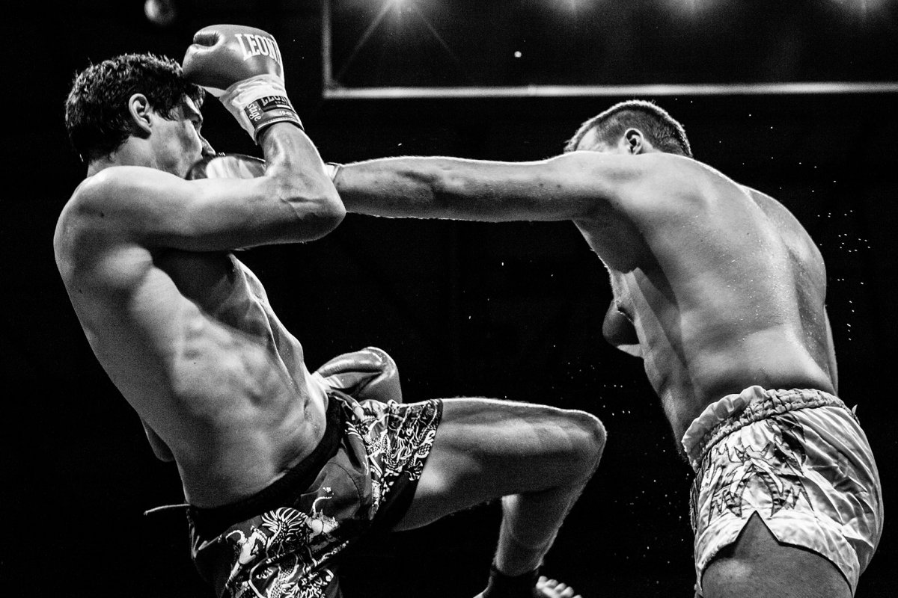
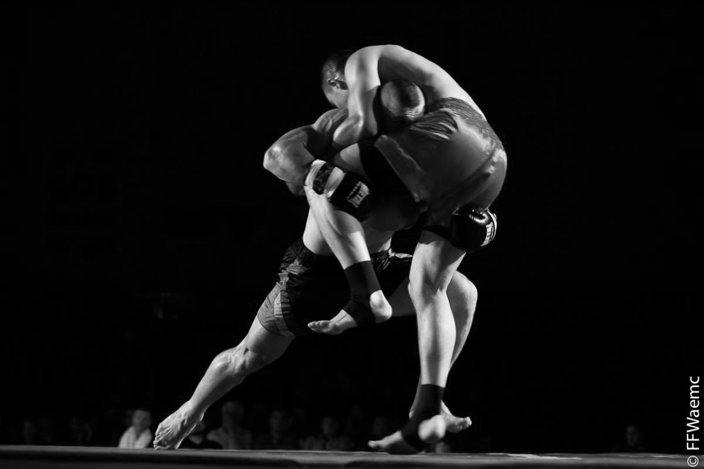

Muay-thaï

La boxe thaïe, ou muay-thaï (thaï : มวยไทย, « boxe du peuple Tai »), parfois appelée boxe thaïlandaise, est un sport de combat en usage dans les armées de l'empire khmer depuis le début de notre ère. Il fut adopté par les militaires thaïlandais au xve siècle à la suite de la victoire du royaume Siam d'Ayutthaya sur les khmers d'Angkor. Il est classé en Occident parmi les boxes pieds-poings (BPP), c’est-à-dire les boxes dites « sportives ».
La boxe thaïe trouve son origine dans des pratiques martiales ancestrales, notamment dans ce qu’on appelle en Occident le muay boran (boxe traditionnelle) et du krabi krabong (pratique avec les armes). La boxe thaïlandaise de haut niveau, c’est-à-dire de compétition, nécessite :
de bonnes capacités cérébrales, (vision de jeu, prise de décision adéquate et rapide, intelligence de jeu…), et des capacités mentales indispensables, comme la détermination, la volonté et le courage ;
de fortes habiletés techniques avec comme support des aptitudes physiques telles que la souplesse musculaire, la vitesse et la capacité de réaction à un signal (réflexes) ; et de surcroit, pour le combat au K.O-system, la puissance musculaire.
Kick-boxing

Le kick-boxing désigne d'une part l'ensemble des disciplines de combat utilisant les coups de pied et coups de poing. D'autre part le kick-boxing désigne une discipline appartenant au groupe des boxes pieds-poings1 (BPP) développée au début des années 1960 par les Américains, ou kick-boxing américain avec coup de pied circulaire en ligne basse et parallèlement à la même époque par les Japonais, appelé kick-boxing japonais avec coups de genou. Pour cette dernière, depuis les années 1990, la forme la plus médiatique est le tournoi du K-1 World Grand Prix et le K-1 World MAX.
Sanda

Le Sanda est une forme de combat libre; on peut aussi le qualifier de Kung-fu sportif ou de sport de combat ; par opposition au kung-fu traditionnel qui est un art martial. Le Sanda se caractérise par l'utilisation des poings, des jambes et des projections. Dans les années 70, le gouvernement chinois commence à promouvoir le Sanda pour mettre fin aux combats sans catégorie de poids et autorisant presque tous les coups, qui sont organisés dans les villes et les villages. Ces combats se gagnaient par K.O. ou par abandon. Les premiers tournois prennent leur essor dans les années 80. On peut même espérer voir un jour le Sanda comme discipline olympique. Un combat se compose de deux ou trois rounds de deux minutes chacun avec un arbitre central et quatre arbitres de coins comptabilisant les points. La tenue du combattant se compose d'un casque, d'un plastron, d'une paire de gants, d'une paire de protège tibia, d'une coquille et d'un protège dent.